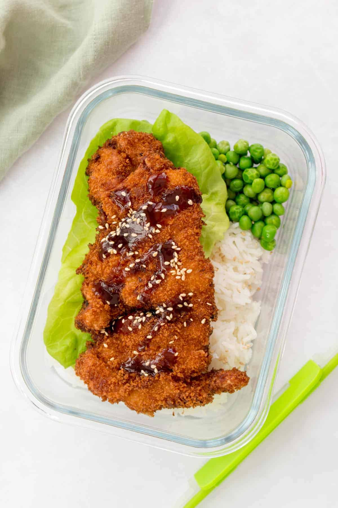

Katsu is a Japanese dish of crispy fried cutlets coated with Panko bread crumbs. Popular varieties are chicken katsu (like this recipe) and tonkatsu (which is made with pork).
The total time to complete this recipe is about 25 minutes and it produces 4 servings.
- 4 skinless, boneless chicken breast halves - pounded to 1/2 inch thickness
- salt and pepper to taste
- 2 tablespoons all-purpose flour
- 1 egg, beaten
- 1 cup panko bread crumbs
- 1 cup oil for frying, or as needed
- Season chicken breasts on both sides with salt and pepper.
- Place flour, beaten egg, and panko crumbs into separate shallow dishes.
- Coat chicken breasts in flour, shaking off any excess; dip into egg, and then press into panko crumbs until well coated on both sides.
- Heat oil in a large skillet over medium-high heat.
- Place chicken in the hot oil, and fry until golden brown, 3 or 4 minutes per side.
- Transfer to a paper towel-lined plate to drain.